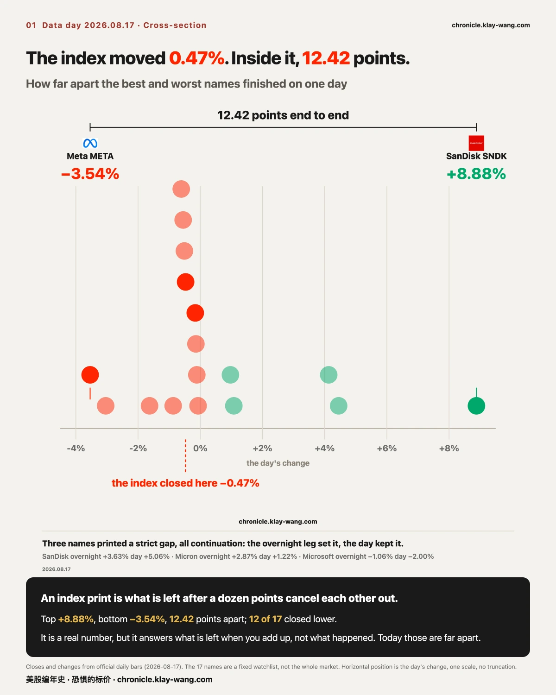
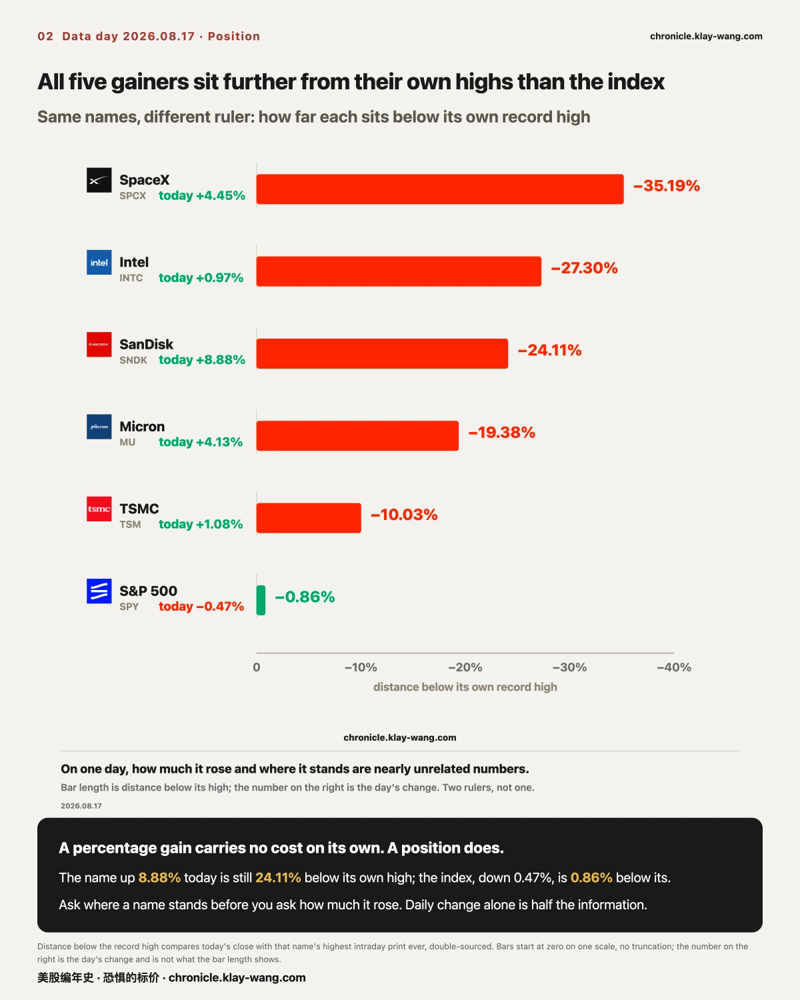
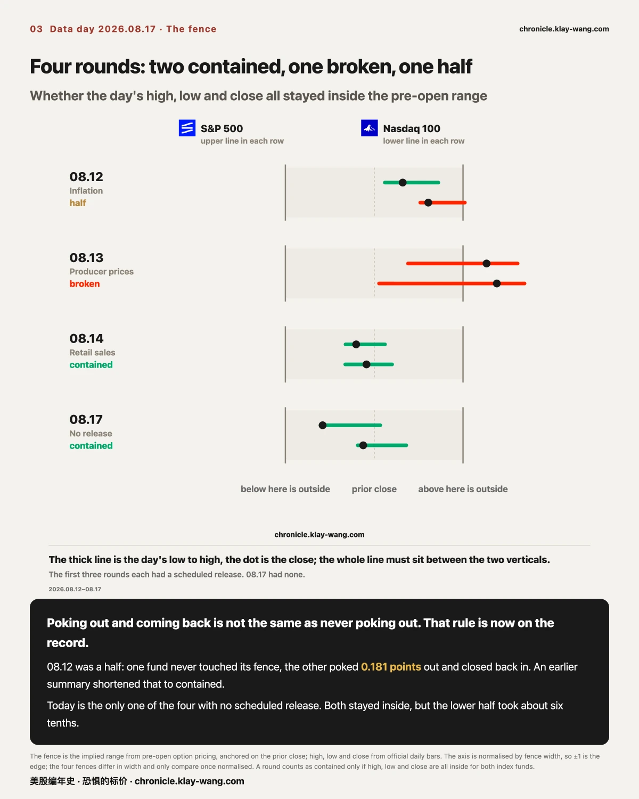
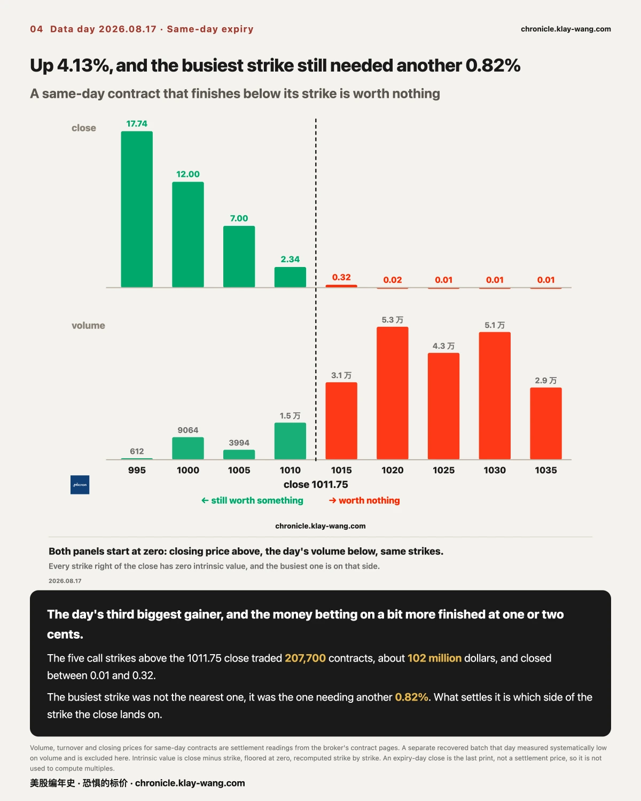
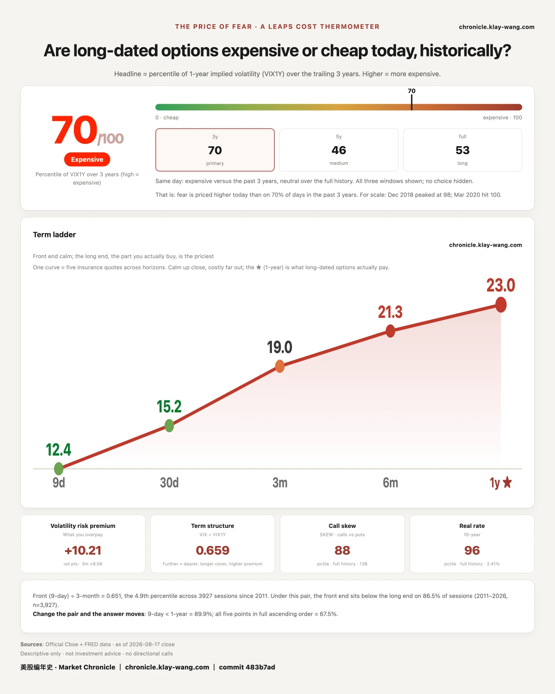

Section 1 is the main course: what actually happened on a day whose index reading was close to zero, and why those two facts do not contradict each other. Section 2 asks the more useful question, which is where the biggest gainers stand inside their own history. Section 3 is the fourth round of the fence, and today is the only one of the four with no scheduled macro release. Section 4 settles the open items from the last two issues, including three we could not retrieve today. Section 5 is the thermometer, plus one thing that has to be said in advance.

Anchors first. One index fund closed at 772.67, down 0.47% from 776.34. The other closed at 729.87, down 0.16% from 731.07. On any daily chart this day looks like nothing happened.
On that same day, inside the 17-name watchlist: the top name rose 8.88% to close at 1786.85, the bottom name fell 3.54% to close at 568.97. That is 12.42 percentage points from one end to the other. Twelve of the seventeen closed lower.
An index reading is what is left after those twelve points cancel each other out. It is a real number, but it answers the question what is left when you weight everything and add it up, not the question what happened today. On most days those two answers are close. Today they were not.
The distribution was not random either. The upper end was memory and hardware: SanDisk 8.88%, SpaceX 4.45%, Micron 4.13%, TSMC 1.08%, Intel 0.97%. The lower end was platforms: Meta down 3.54%, Microsoft down 3.04%. All seven megacaps closed red.
That line is the headline we gave this issue, and here we take it apart ourselves. Five of the seven fell by less than one percent: Apple 0.11%, Nvidia 0.07%, Amazon 0.51%, Alphabet 0.55%, Tesla 0.87%. Only two actually fell, Meta at 3.54% and Microsoft at 3.04%, and both are platform names.
So all seven closed red is true, and it is not one event. Five sat in the noise band and two were sold. A headline that counts noise and selling as the same thing reads alarming and tells you nothing. Our read is that there was no broad megacap weakness today. Two platform names were sold.
Split each day into two segments, the overnight leg (open against the prior close) and the daytime leg (close against the open), and three names printed a strict gap today, meaning the day's low was above the prior day's high or the reverse:
All three are continuation shapes: the overnight leg set the direction and the daytime leg did not take it back. That is the opposite of 08.12, when the overnight move was reversed during the session. This is exactly what splitting a day buys you. The full-day change tells you the result; the two segments tell you who was watching when it formed.
One more thing few people look at.
Among same-day expiring contracts, across the 13 names where we hold settlement readings, 11 had a put as their busiest strike, and 12 of them had that strike within one percent of the close (Apple, the furthest out, was 1.01% away).
The retail image of same-day options is a casino, a crowd betting direction. Today's numbers do not say that. The largest pools of money sat pinned against the spot price with almost no time value left in them. Our read is that on the same-day layer, most of the volume has nothing to do with direction. Anyone reading it as a retail casino is watching the loudest slice, not the largest one.
This can be refuted: if the busiest strikes on coming expiries sit systematically away from spot, then today's shape was just one day.
SanDisk's week traces to its own investor day on 08.13 and the price-target increases that followed. Micron had a rating and target increase, and management comments on how long tight supply is expected to last.
Neither headline is new. What is worth noticing is when the market priced them. Both names did nearly all of their move before the open, and the daytime session simply did not take it back.

Section 1 covered what happened. This section is the one part of this issue you can apply directly to your own holdings.
A percentage gain, on its own, carries no cost. It does not tell you whether a name is expensive, and it does not tell you where that name sits inside its own history. Redraw the same list against a different ruler, closing price measured against its own record high, and the picture changes completely:
Five names rose today, and all five sit further from their own highs than the index does. That statement contains no view on direction. It only says that within a single day, how much it rose and where it stands are two nearly unrelated numbers.
The use is plain. When a name posts a large single-day gain and you want to know what that gain means, ask how far it is from its own high first, and how much it rose second. The first number is position, the second is change. Position is what carries cost: a name 24% below its high and a name 0.86% below its high need entirely different things to happen next, even on a day when they rise by the same amount.
We are not telling you what to do with this ruler. We are pointing out that when you look only at the daily change, half the information is missing.

What this section does: before each open, the options market implies a range for the day. We call it the fence. For four straight sessions we have recorded one thing, whether the day's high, low and close all landed inside the range that was posted before the open.
The first three were all release days: 08.12 was inflation, 08.13 was producer prices, 08.14 was retail sales. 08.17 was not. There is no first-tier macro release on today's calendar. So this fourth round is not the same question: the first three measured whether the fence could contain a known event, and today measures whether a fence is simply looser on a day with no event. That distinction has to be stated, or four rounds side by side read as four attempts at one question.
Today's fence and today's result:
Worth one more look is which half of the fence got used. Less than a tenth of the upper half, roughly six tenths of the lower half. The fence held, but the day's activity leaned clearly toward the lower edge. That is a shape, not a direction call.
The four-round score needs to be written out carefully, because we compressed it once already.
Testing each round against one rule, whether the high, the low and the close all landed inside the fence:
On 08.14 and 08.17, both index funds were fully inside.
On 08.13, both were broken.
08.12 was a half: the S&P fund never touched its fence, while the Nasdaq fund poked 0.181 points above its upper edge intraday and closed back inside.
The 08.12 issue itself stated those 0.181 points. It was the summary in the 08.14 issue that shortened it to contained.
So the accurate score across four rounds is: two fully contained, one fully broken, one half.
We are not editing the shorthand that already went out. From today we are simply putting the rule on the record: poking out and coming back is not the same as never poking out. A scoreboard is worth more than any single score, provided it keeps using one test.
And to say it plainly: the fourth round was not asking the same question as the first three. The first three had a scheduled release. Today did not.

Nvidia's flip level: 201.95. It was 202.93 on 08.13 and 203.78 on 08.14. The question we posted was whether it would leave the 200 to 210 band. It did not, so it stays open for a third issue. When it cannot be called, we write that it cannot be called. Inside that band we have nothing with content to say.
Broadcom's term inversion: it widened from 0.85 to 1.38, and it is no longer alone.
Last issue asked whether 0.85 would narrow or widen. It widened, to the widest of these five sessions:
0.29, 0.30, 0.78, 0.85, and 1.38 today. Plainly read, one month of volatility on that name is priced
above one year of it. Normally the one-year sits higher, because more time means more that can happen;
when it flips, the near end is being charged for separately. The name has now closed lower two sessions
running, down 5.94% on 08.14 and 0.14% today, and the near end has not loosened along with it.
And a new development alongside it: the inversion is no longer one name, it is two. On 08.14, Broadcom
was the only one of nineteen inverted. Today SpaceX flipped too, from minus 3.23 to plus 0.66, a move of
3.89 in a session. The other seventeen keep the ordinary shape, one year above one month, most of them by
four to nine. We place these side by side and stop there: we do not write why either inverted, or whether
they are related.
Two items could not be retrieved today. Here is why, one at a time, with no stale numbers substituted in.
First, the open interest on the three long-dated structures. The 08.13 issue asked whether those three strikes would hold as implied volatility came down, measured against the levels confirmed on the morning of 08.14. Today those strikes traded below the volume threshold our scan uses, and a strike that does not clear the threshold does not enter that day's table, so their current open interest was not recorded. This one rolls to the next issue with the test unchanged.
Second, the open interest on SanDisk's 1600 put. Same situation, same reason.
One item is being formally abandoned. TSMC's 560 call traded 32276 contracts on 08.06, and we have been trying for seven days to get its settled open interest from the following morning. Today we confirmed that number is permanently unavailable: open interest is a current value with no historical lookup, and after 08.06 that strike fell below the threshold and never re-entered our table. This is not an oversight, it is an expiry. We are recording it as a method lesson: any question phrased as the next morning's open interest has to be answered that day or the next, or it is gone for good. From now on, items like that get a latest-retrieval date written into them when they are opened.

The previous section said a gain carries no cost. This is one concrete instance from the same day that puts a number on it.
Micron rose 4.13% to close at 1011.75, the third biggest gain of the day. It had a set of contracts expiring today. A same-day contract has exactly one rule: which side of the strike the close lands on decides whether it is worth anything.
Anchors first. The call strikes below the 1011.75 close still held intrinsic value at the bell: the 1000 closed at 12.00, of which 11.75 was intrinsic, and the 1010 closed at 2.34, of which 1.75 was intrinsic. The five strikes above the close had zero intrinsic value: 1015 closed at 0.32, 1020 at 0.02, and 1025, 1030 and 1035 at 0.01 each.
Those five traded 207,700 contracts today, about 102 million dollars of turnover.
What is worth looking at is where the volume sat. The busiest strike was not the nearest one, it was 1020, which traded 53,400 contracts on the day, more than three times the 1010 sitting right against the price. The 1020 is 0.82% above today's close. The most crowded position of the day was, in effect, Micron rises another 0.82% today. It did not.
Read this together with the previous section. A name rose 4.13% and finished third on the day's leaderboard, which sounds like a large number. For these five contracts, 4.13% and 0% produced the same outcome, because what settled them was not how much it rose but which side of the strike it closed on.
This is the plainest version of a gain carrying no cost. A gain is a result. These contracts are opinions that someone had to fix on a specific level before the open, and pay for. They are not the same kind of thing.
Two notes on method: an expiry-day close is the last print rather than a settlement price, so we do not use it to compute multiples and we do not write who gained or lost; and part of today's data in this layer was recovered rather than collected, measuring systematically low on volume, so every number quoted here comes from the broker's own contract-page settlement readings and that batch is excluded.
The question we posted last issue was whether 65.3 would continue down or turn back up. Today's answer: back up.
The reading is 69.7, against 65.3 on the prior session, and 67.2 and 61.9 before that. The card records 70 out of 100. One-year volatility is 23.04, up 0.29 from 22.75. From the shortest tenor out to one year, all five cost more than they did on the prior session: nine days 12.39, one month 15.19, three months 19.04, six months 21.33, one year 23.04.
This is the exact reverse of Friday. Friday was a badly missed data print with an index that did not move and insurance marked down across the curve. Today the index barely moved while twelve points opened up inside it, and insurance was marked back up across the curve. Reading the two days together, the only thing we can say is this: the people who have to quote a price for the future are asking more today than they were on Friday.
Fear-Price Index by Market Chronicle · Aug 17, 2026 · 70/100: one-year volatility VIX1Y at 23.04, in the 70th percentile of the past three years, where high means expensive. Daily ledger and methodology → chronicle.klay-wang.com · When citing: Fear-Price Index · Market Chronicle
08.19 is the roll date for volatility futures. The front contract has two sessions left.
On the roll, the shape of this curve will appear to change. That is because the contract used to compute it was replaced, not because fear changed. We are writing this now so that nothing has to be explained after the fact on 08.19. Today the curve is in contango, the furthest month sits 44.6% above the front, and spot at 15.19 is below the front month at 15.61. Keep those three numbers and check them after the roll, to see whether what moved was the shape or only the contract.
08.19, Wednesday, is the volatility futures roll, and the point about the curve's shape has now been made in advance. 08.21, Friday, is monthly expiration, and most of the contracts recorded this week settle that day: two Alphabet puts, sixteen SpaceX strikes, the Micron call ladder, and both sides of SanDisk's 1600. 08.18, Tuesday, Reddit formally joins the S&P 500, and the gap from the announcement date is already on record, to be placed alongside the gap on the effective date.
Four items return next issue: the open interest on the three long-dated structures, not retrieved today with the test unchanged; the open interest on SanDisk's 1600 put, the same; whether Nvidia's flip level leaves the 200 to 210 band, 201.95 today and open for a third issue; and where Broadcom's inversion goes after 1.38, together with whether SpaceX's flip lasts more than a day. Plus the fifth round of the fence, noting that 08.21 is monthly expiration and its fence is not the same ruler as an ordinary day's.